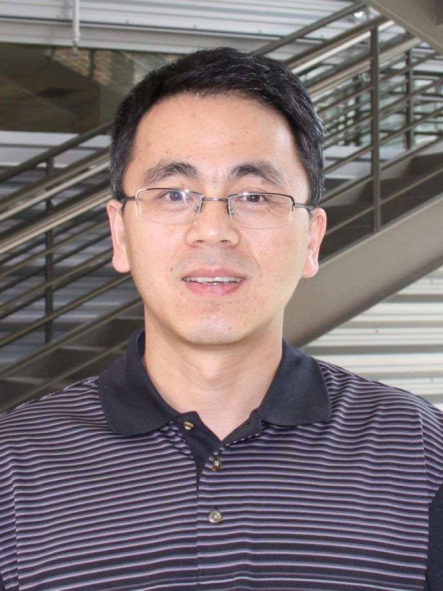

Prof. Haijun Su
Professor, Mechanical and Aerospace Engineering
Ohio State University
Dr. Haijun Su is a Professor in Mechanical and Aerospace Engineering Department at The Ohio State University, a Fellow member of ASME. Dr. Su received numerous awards including the 2026 ASME DED Mechanisms and Robotics Award, the 2026 ASME DED Leonardo Da Vinci Award, the NSF Faculty Early Career Development (CAREER) award in 2008, ASME M&R Freudenstein/GM Young Investigator award in 2010, Lumley Research Award in 2015, Lumley Interdisciplinary Research Award in 2018, and many best paper awards. Dr. Su currently serves as a co-Editor for ASME Journal of Mechanical Design. Before that he was an Associate Editor for ASME Journal of Mechanical Design, Mechanism and Machine Theory, ASME Journal of Mechanisms and Robotics. He severed as the Industry Relation Chair of the 2010 ASME IDETC/CIE and the chair of 2016 ASME Mechanisms and Robotics Conference.